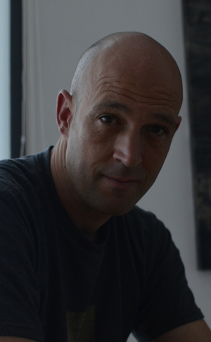

Angel Lopez-Urrutia
Research Scientist
Spanish Institute of Oceanography, IEO, Gijon, Spain
lopezurrutia@gmail.com
I am a Senior Scientist at the Spanish Institute of Oceanography, a governmental research institution. I am based at the lab in Gijon (Centro Oceanografico de Gijon, Asturias). I am a marine ecologist, my work uses marine plankton as models to test ecological theories. I apply data mining, mathematical theory and macroecological techniques in an attempt to understand the structure of nature. My research interests are quite broad, from physiological rates at the celullar level to community rates and biogeochemical cycles.
I am a biologist but most of my work deals with data analysis and model development. My latest interest is on the development of imaging systems and software for the automatic classification of plankton using deep learning techniques. I believe that machine learning can make a difference in the scientific community by automating repetitive tasks so researchers can focus on more impactful work.
Publications